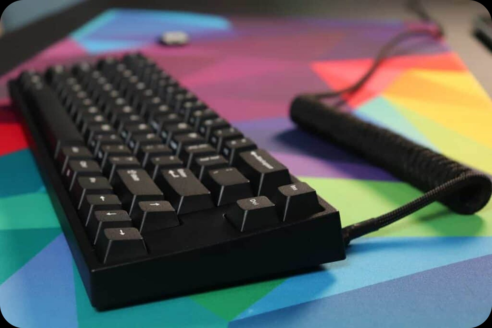

First Time here?
Welcome
Leopold is a renowned Korean brand in the mechanical keyboard scene, celebrated for its durable build, customizable layouts, and high-quality switches like Cherry MX and Topre.
LEARN MORE
Leopold Keyboard Bestsellers
Leopold FC650MDS
The Leopold FC650MDS is a mechanical keyboard known for its durable design, responsive switches, and customizable keycaps, offering an exceptional typing experience for both professionals and gamers.
LEARN MORELeopold FC660MBT
The Leopold FC660MBT is a compact, Bluetooth-compatible mechanical keyboard that combines high-performance features with wireless convenience, ideal for users seeking flexibility without compromising on quality.
LEARN MORELeopold FC750R
The Leopold FC750R is a full-sized mechanical keyboard that delivers excellent tactile feedback and a solid build, perfect for those who require precision and comfort during long typing sessions or gaming marathons.
LEARN MORE